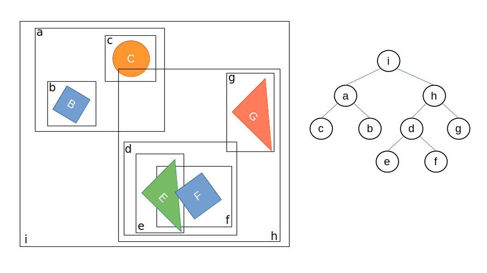

Dynamic Tree
The dynamic tree finds objects whose axis-aligned bounding boxes overlap. These boxes have edges parallel to the world axes and are often called AABBs. An object tracked by the tree is called a proxy and implements IDynamicTreeProxy.
The tree groups nearby boxes so a query can skip whole groups that are out of range. Slightly expanded boxes also let objects move a short distance without needing to be reinserted every time.

Adding proxies
All shapes added to a rigid body (body.AddShape) are automatically registered with world.DynamicTree.
Custom implementations of IDynamicTreeProxy can be added to the tree using tree.AddProxy.
In this case, a BroadPhaseFilter must be implemented and registered (using world.BroadPhaseFilter) to handle collisions with the custom proxy, otherwise an InvalidCollisionTypeException is thrown.
Enumerate Overlaps
Call tree.Update to refresh moving objects and the set of overlapping pairs. world.Step does this automatically for world.DynamicTree. Use tree.EnumerateOverlaps to visit those pairs; overlapping boxes do not necessarily mean the shapes touch.
After changing a shape's geometry, call world.DynamicTree.Update(shape) to refresh it immediately. See Changing an attached shape for the other updates needed.
Querying the tree
Choose a query based on the result you need:
Query(...)tests bounding boxes and returns objects that might intersect the query.RayCast(...),SweepCast(...), andFindNearest(...)also test the shapes and return the nearest accepted result.
Broadphase-only queries
Find objects whose tree bounds overlap a box:
public void Query<T>(T hits, in JBoundingBox box) where T : class, ICollection<IDynamicTreeProxy>
public void Query<TSink>(ref TSink hits, in JBoundingBox box) where TSink : ISink<IDynamicTreeProxy>
Or find objects whose tree bounds intersect a ray:
public void Query<T>(T hits, in JVector rayOrigin, in JVector rayDirection) where T : class, ICollection<IDynamicTreeProxy>
public void Query<TSink>(ref TSink hits, in JVector rayOrigin, in JVector rayDirection) where TSink : ISink<IDynamicTreeProxy>
For a custom query, you can traverse tree.Nodes directly. This example finds bounding boxes containing a point. Only run it on a nonempty tree (tree.Root >= 0):
var stack = new Stack<int>();
stack.Push(tree.Root);
ReadOnlySpan<DynamicTree.Node> nodes = tree.Nodes;
while (stack.TryPop(out int id))
{
ref readonly DynamicTree.Node node = ref nodes[id];
if (node.ExpandedBox.Contains(point))
{
if (node.IsLeaf)
{
Console.WriteLine($"{node.Proxy} has a bounding box containing {point}.");
}
else
{
stack.Push(node.Left);
stack.Push(node.Right);
}
}
}
Exact query helpers
These methods use the tree to find candidates, then test their shapes. They return true when an accepted result is found and false otherwise.
Ray casting
All proxies implementing IRayCastable can be ray cast, including all shapes:
// Unbounded
public bool RayCast(JVector origin, JVector direction, RayCastFilterPre? pre, RayCastFilterPost? post,
out IDynamicTreeProxy? proxy, out JVector normal, out float lambda)
// Bounded: only considers hits with lambda < maxLambda
public bool RayCast(JVector origin, JVector direction, float maxLambda, RayCastFilterPre? pre, RayCastFilterPost? post,
out IDynamicTreeProxy? proxy, out JVector normal, out float lambda)
The ray starts at origin and extends along direction, which need not be normalized. The hit point is origin + lambda * direction. With a unit direction, lambda is the distance to the hit.
The method also returns true when the origin is inside a shape; in that case lambda is zero and normal is JVector.Zero. Use the pre- and post-filters to skip unwanted objects or hits.
Sweep casting
All proxies implementing ISweepTestable can be sweep-tested, including all shapes:
// Unbounded
public bool SweepCast<T>(in T support, in JQuaternion orientation, in JVector position, in JVector direction,
SweepCastFilterPre? pre, SweepCastFilterPost? post,
out IDynamicTreeProxy? proxy, out JVector pointA, out JVector pointB, out JVector normal, out float lambda)
where T : ISupportMappable
// Bounded: only considers hits with lambda ≤ maxLambda
public bool SweepCast<T>(in T support, in JQuaternion orientation, in JVector position, in JVector direction, float maxLambda,
SweepCastFilterPre? pre, SweepCastFilterPost? post,
out IDynamicTreeProxy? proxy, out JVector pointA, out JVector pointB, out JVector normal, out float lambda)
where T : ISupportMappable
Pass the convex query shape with its world-space orientation and position. It moves along direction without rotating. Its position at impact is position + lambda * direction.
For a sweep over a fixed distance, set direction to the full displacement and use maxLambda = 1.
pointA is a point on the query shape at its starting position. Move it to the impact position with pointA + lambda * direction. The target stays stationary during the query, so pointB is already its world-space contact point. normal is also in world space.
If the shapes already overlap, the result is true, lambda is zero, and normal is JVector.Zero. Contact points are undefined in that case.
The pre-filter (SweepCastFilterPre) receives a candidate before its shape is tested. Use it to ignore objects, such as the body being swept.
The post-filter (SweepCastFilterPost) receives the full SweepCastResult, including Lambda, Normal, PointA, and PointB. Use it to inspect the geometry of a hit. Returning false skips that result and continues the search. You can also collect results here and return false to keep searching.
For common built-in query shapes, convenience overloads are available:
public bool SweepCastSphere(float radius, in JVector position, in JVector direction, ...)
public bool SweepCastBox(in JVector halfExtents, in JQuaternion orientation, in JVector position, in JVector direction, ...)
public bool SweepCastCapsule(float radius, float halfLength, in JQuaternion orientation, in JVector position, in JVector direction, ...)
public bool SweepCastCylinder(float radius, float halfHeight, in JQuaternion orientation, in JVector position, in JVector direction, ...)
Each has a bounded variant with a maxLambda parameter.
Find nearest query
All proxies implementing IDistanceTestable can be distance-queried, including all shapes:
// Unbounded: considers all IDistanceTestable proxies in the tree
public bool FindNearest<T>(in T support, in JQuaternion orientation, in JVector position,
FindNearestFilterPre? pre, FindNearestFilterPost? post,
out IDynamicTreeProxy? proxy, out JVector pointA, out JVector pointB, out JVector normal, out float distance)
where T : ISupportMappable
// Bounded: only considers proxies within maxDistance
public bool FindNearest<T>(in T support, in JQuaternion orientation, in JVector position, float maxDistance,
FindNearestFilterPre? pre, FindNearestFilterPost? post,
out IDynamicTreeProxy? proxy, out JVector pointA, out JVector pointB, out JVector normal, out float distance)
where T : ISupportMappable
The query shape is defined by an ISupportMappable plus its world-space orientation and position.
pointA and pointB are the closest points on the query shape and the found object, in world space. normal is a unit vector pointing from the query shape toward that object.
An overlapping object also counts as a result. In that case distance is zero, normal is JVector.Zero, and the closest points are undefined. The method returns false when no accepted object is found within range.
The pre-filter (FindNearestFilterPre) receives a candidate before its shape is tested. The post-filter (FindNearestFilterPost) receives the calculated FindNearestResult. Return false from either to skip that candidate and continue searching.
To skip overlapping proxies and find the nearest separated proxy instead, reject overlap results in the post-filter:
world.DynamicTree.FindNearestSphere(radius, position,
pre: null,
post: result => result.Distance > 0,
out proxy, out pointA, out pointB, out normal, out distance);
For common built-in query shapes, convenience overloads are available:
public bool FindNearestPoint(in JVector position, ...)
public bool FindNearestSphere(float radius, in JVector position, ...)
Each has a bounded variant with a maxDistance parameter.
Overlap check example
To find shapes overlapping a sphere, first query its bounding box, then test each candidate against the sphere:
// Returns all RigidBodyShapes overlapping a sphere at 'center' with 'radius'.
static IEnumerable<RigidBodyShape> OverlapSphere(World world, JVector center, float radius)
{
var queryBox = new JBoundingBox(
center - new JVector(radius),
center + new JVector(radius));
var candidates = new List<IDynamicTreeProxy>();
world.DynamicTree.Query(candidates, queryBox);
var querySphere = SupportPrimitives.CreateSphere(radius);
foreach (var proxy in candidates)
{
if (proxy is not RigidBodyShape shape) continue;
ref var data = ref shape.RigidBody.Data;
bool hit = NarrowPhase.Overlap(
querySphere,
shape,
JQuaternion.Identity,
data.Orientation,
center,
data.Position);
if (hit) yield return shape;
}
}
The bounding-box query limits the work; NarrowPhase.Overlap removes candidates whose boxes overlap but whose shapes do not.